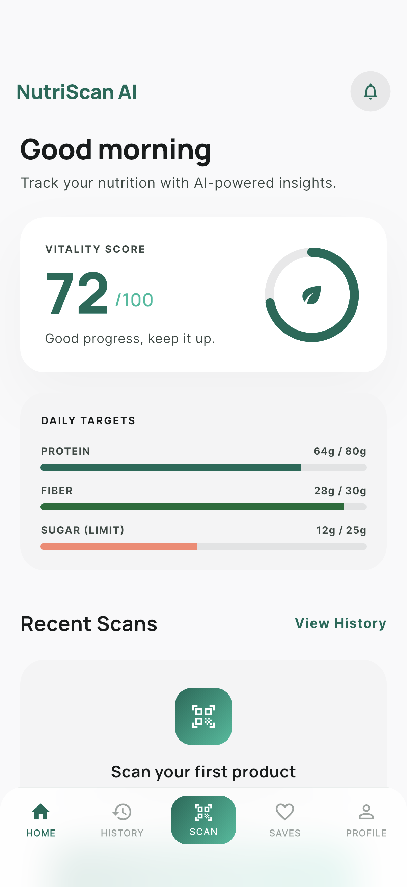
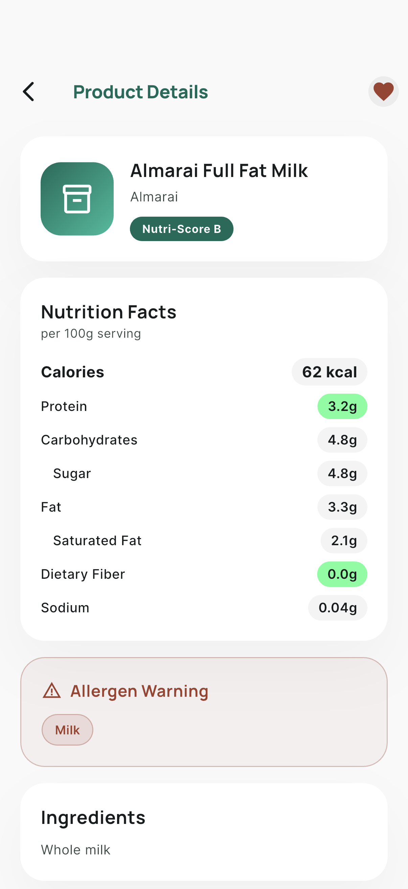
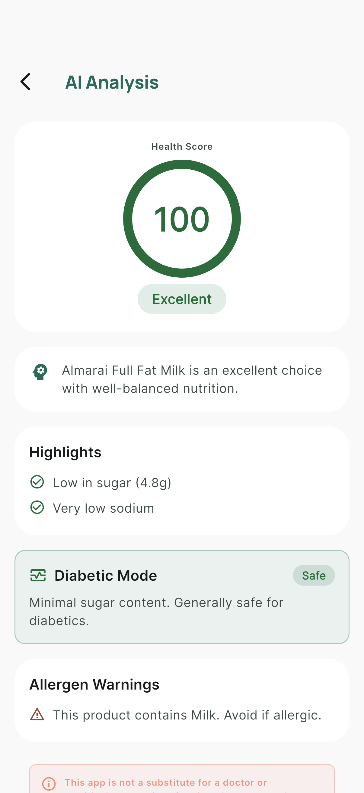
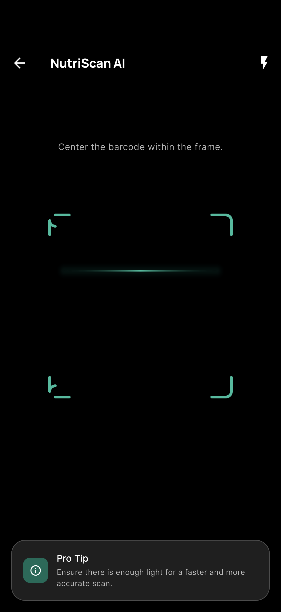

Mobile-first UX
Flutter app with scanner, product details, analysis, history, favorites, and profile preferences.
Early-stage health-tech mobile product
NutriScan AI helps users scan food barcodes, view nutrition details, and get AI-assisted product analysis. This project is currently pre-revenue and positioned for early access validation.
Not currently listed as a live store business. Built as a product asset ready for commercialization.
NutriScan AI combines mobile UX and backend analysis into one runnable stack for fast iteration.
Flutter app with scanner, product details, analysis, history, favorites, and profile preferences.
FastAPI gateway, product catalog service, and nutrition analysis service with Docker Compose.
Mock mode works out of the box and real API mode is available with the local backend stack.
Repository includes buyer docs, gap analysis, handover plan, and data-room starter structure.
Built for health-conscious users, diabetic-aware workflows, and operators exploring wellness product opportunities.
Current app UI screenshots from the repository. These prove product implementation, not market traction.




This form is the first measurable demand path. Configure a real endpoint in landing/config.js
before public launch.
No. It is currently an early-stage product asset and pre-revenue project.
Yes. The repository includes a runnable Flutter app, backend services, and screenshots.
Real auth, production deployment, analytics in production, legal hardening, and monetization rollout.
Landing visits, CTA clicks, form starts, form submissions, and confirmation views.